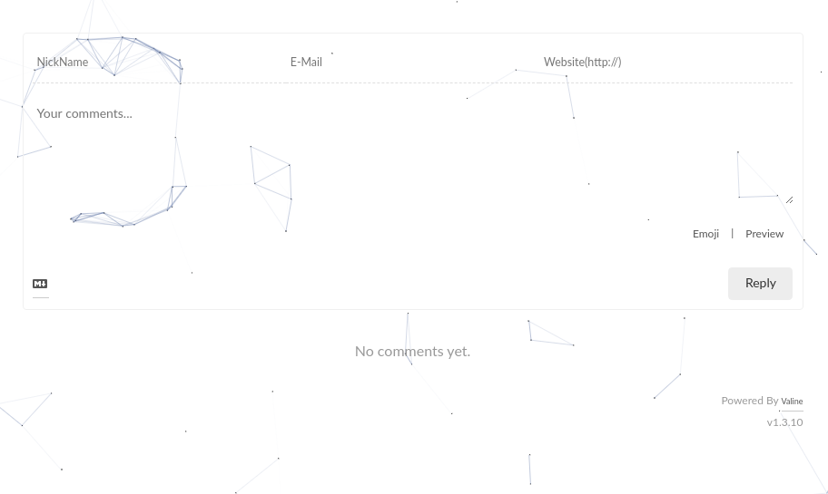
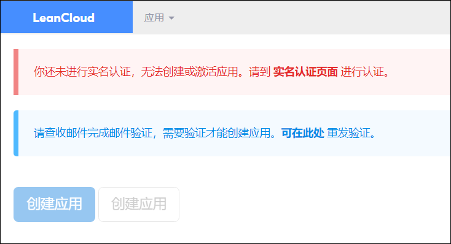
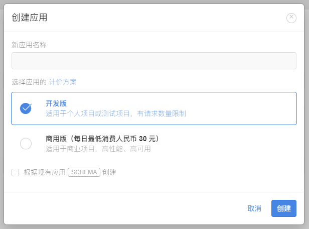
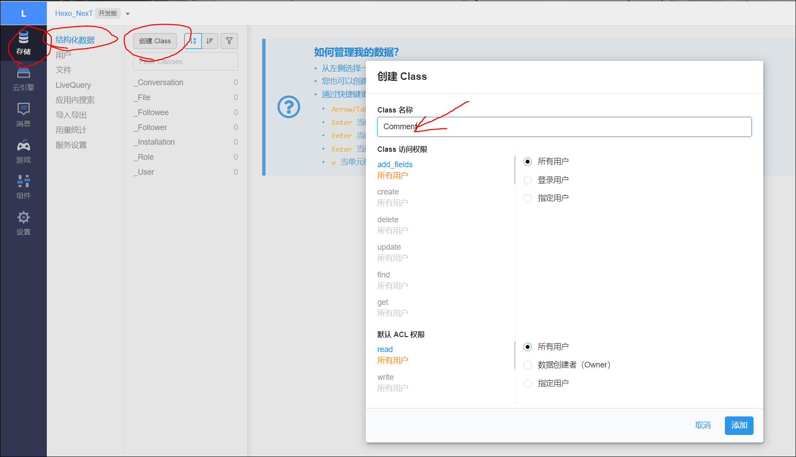
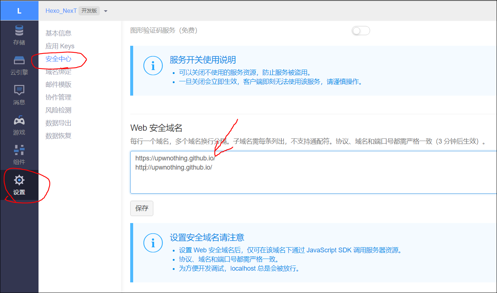

为Hexo NexT 添加评论系统
2021.1 更新
由于从Next v8.1.0起，Next的开发者考虑到Valine的隐私泄漏问题以及绑定的百度统计代码，所以Valine被默认移除。这里也推荐更换其他的评论系统。
详细信息可以参考： https://github.com/next-theme/hexo-theme-next/issues/4
选择合适的评论系统
我选择评论系统时，考虑到以下几点：
- 免费 ( 排除 hypercomments )
- 无需翻墙 ( 排除 disqus )
- 评论无需注册登录 ( 排除 gitment, gitalk, gitter 这三个github相关的评论系统 )
- 不要求网站备案 ( 排除一系列国内的评论系统 )
在剩下的为数不多的可选项中，Valine就成为了那个被我最终选择的评论系统。
最终效果图:

LeanCloud 注册及配置
账号注册
Valine是一款基于LeanCloud的快速、简洁且高效的无后端评论系统。所以我们需要先注册一个账号。
这里顺带提一句，在Valine上注册需要手机号码接受验证码，以及通过实名身份认证。

Valine已经计划在未来支持基于Firebase的评论存储。Firebase可以避免实名身份认证等问题。
创建应用并获取APP ID 和 APP Key
在完成上述认证步骤之后，我们可以开始创建应用。

应用创建好以后，进入刚刚创建的应用，选择左下角的设置>应用Key，然后就能看到你的APP ID和APP Key了：

之后再在左边栏点击储存，查看结构化数据中有没有Comment和Counter这两个Classes。如果没有，点击创建Class，默认选项即可直接创建。

再进入设置-安全中心，设置自己的安全域名：

至此，就是全部需要在LeanCloud中进行的操作了。
配置NexT
在主题配置文件中找到Valine配置项，根据自己的需要进行配置。
1 | # Valine |
具体参数的含义可以查看官方文档.
这里简单说明一下：
- enable: true 不解释
- appid 和 appkey, 填上之前LeanCloud中获得的对应值
- notify: 控制邮件通知。需要配合LeanCloud的配置，详见：https://github.com/xCss/Valine/wiki/Valine-%E8%AF%84%E8%AE%BA%E7%B3%BB%E7%BB%9F%E4%B8%AD%E7%9A%84%E9%82%AE%E4%BB%B6%E6%8F%90%E9%86%92%E8%AE%BE%E7%BD%AE
- verify: 验证码服务
- placeholder: 评论框的占位提示符，默认为”Just go go”。这里可以修改成任意你觉得有趣的话。
- avatar: 默认为mm，具体详见：https://valine.js.org/avatar.html
- pageSize: 评论分页每页条数
- language: 目前仅支持en和zh-cn。暂时还不知道如何可以让评论区的语言与文章的语言统一。
- visitor: 是否启用阅读量统计
- comment_count: 如果是true评论数统计会显示在主页上，false的话则评论数仅在文章页面显示。
- recordIP: 是否记录评论者IP
最终效果
完成配置后，执行hexo cl && hexo g来观察效果。
Perfect! 一次成功！
评论的功能在所有页面都默认开启，我们可以通过在Front-matter中添加comments: false 来关闭评论
评论管理
通过 Valine Admin 可以实现了评论邮件通知、评论管理、垃圾评论过滤等功能。支持完全自定义的邮件通知模板。
目前我并没有启用这个功能。毕竟几乎没有评论，也不需要集中管理。如果之后有需要添加，再更新这一部分的内容。